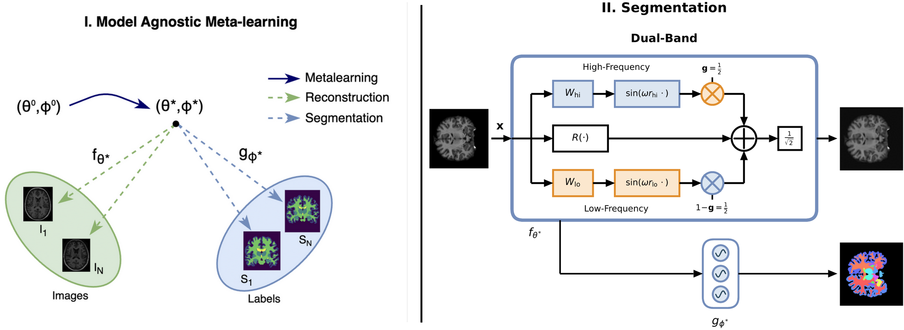
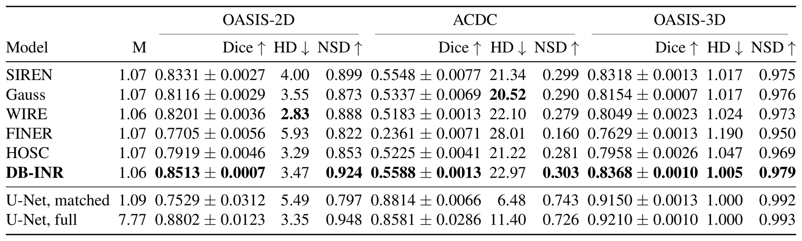
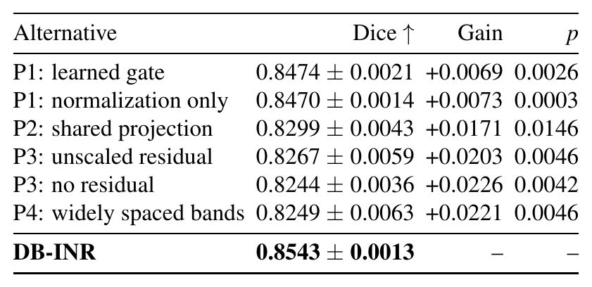
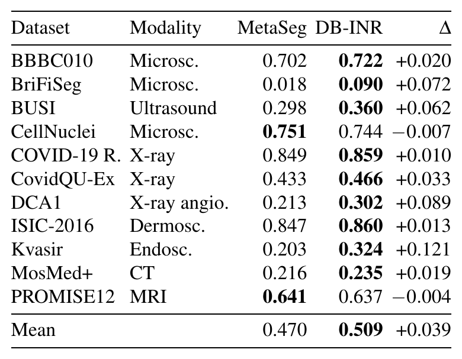
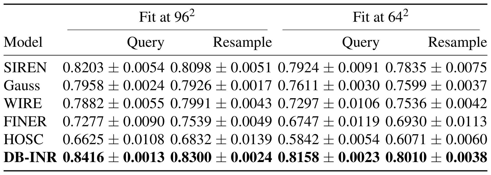
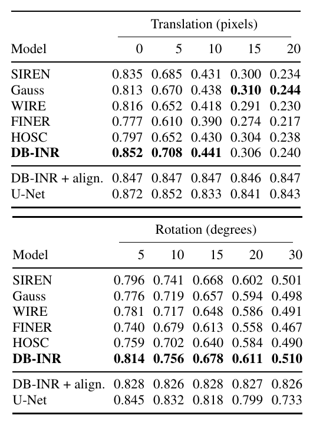
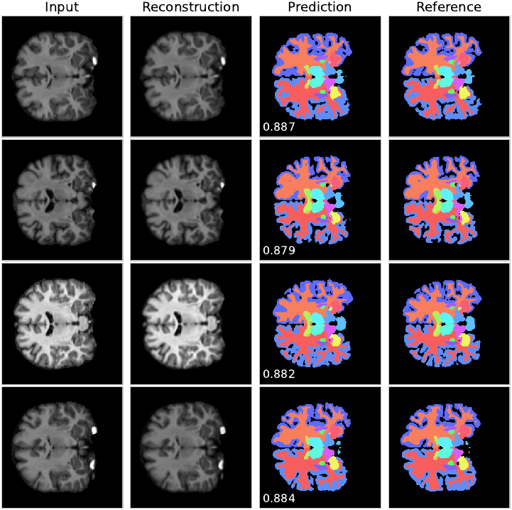
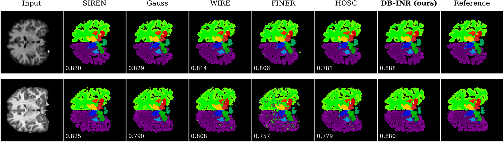

DB-INR
DB-INR: Dual-Band Implicit Neural Representations for Medical Image Segmentation
* Equal first authors
Two sinusoidal bands per layer.
A fixed equal mixture and a scaled residual.
Segment an unseen scan from its intensities alone.
01 / ABSTRACT
Abstract
Implicit neural representations (INRs) fit a continuous coordinate network to an unlabeled test image and decode segmentation from its fitted features. We introduce DB-INR, a dual-band sinusoidal residual layer with independently initialized projections, a fixed equal mixture, scaled residual connections, and nearby frequency multipliers. Controlled ablations support these choices and show that learning a mixing gate provides no measurable benefit over a normalized fixed mixture. At matched parameter budgets, DB-INR achieves the highest mean Dice among the evaluated coordinate backbones on brain and cardiac MRI, with the cardiac margin within seed variability. It improves average performance across MedSegBench datasets and supports accurate decoding between fitting-grid samples. Label-free rigid alignment substantially improves robustness on template-normalized brain scans. Coordinate-prior probes identify limitations when anatomy is not consistently aligned.

02 / METHOD
Method
The layer
Each layer carries a low- and a high-frequency sinusoidal branch with its own projection, combines them with a fixed equal mixture, and adds a residual scaled by 1/sqrt(2):
y = 0.5 * sin(w * r_lo * W_lo x) + 0.5 * sin(w * r_hi * W_hi x)
h = (y + R(x)) / sqrt(2)
with r_lo = 1/sqrt(rho), r_hi = sqrt(rho), rho = phi (the golden ratio) by default, W_lo and W_hi drawn from U(±sqrt(6/n)/(w*r)) at each branch's own effective frequency, and R the identity where the width is unchanged and otherwise U(±sqrt(3/n)).
The supplementary derives four design conditions, each tested in the ablations:
| Condition | Design choice | Ablation flag (dbinr/layers.py / train.py) |
|---|---|---|
| P1 | the mixture is fixed, not learned | fixed_gate=None / --fixed-gate restores a learned gate; norm_gate=True / --norm-gate adds the variance-preserving denominator |
| P2 | each branch has its own projection and initialisation | share_linear=True / --share-linear gives both branches one projection |
| P3 | the residual is scaled by 1/√2 | scale_residual=False / --no-scale-residual; --no-residual removes it |
| P4 | the two bands sit near the base frequency | --rho sets the band ratio r_hi / r_lo |
The pipeline
- Stage one (meta-learning). The coordinate network and the head are meta-learned jointly with MAML, each scan a task. The inner loop adapts the network to one scan for
TiAdam steps with the reconstruction term alone; the outer loop updates network and head under a reconstruction and a focal term. - Stage two (read-out). The network is refitted to every training scan, the penultimate features are cached, and the read-out (one 512-wide hidden layer) is trained on them with early stopping.
- Test time. The network is fitted to the intensities of an unseen scan for
Tfsteps with the reconstruction term alone, and labels are read from the fitted features in one forward pass with the head frozen.
Every backbone in the paper (SIREN, Gauss, WIRE, FINER, HOSC and DB-INR) is trained and evaluated under exactly this protocol and a matched parameter budget. Only the coordinate activation and its validated base frequency differ.
03 / RESULTS
Results
Mean Dice, NSD and HD95 over the full test sets are in Table 1 of the paper. The supplementary repeats every comparison case by case (same trained models, two-sided Wilcoxon signed-rank test over test cases):
| Baseline | OASIS-2D (100 subjects) ahead · median Δ · p |
OASIS-3D (40 volumes) ahead · median Δ · p |
ACDC (50 slices) ahead · median Δ · p |
|---|---|---|---|
| SIREN | 96/100 · +0.0173 · 5.8e-18 | 40/40 · +0.0051 · 1.8e-12 | 30/50 · +0.0092 · 2.5e-01 |
| Gauss | 100/100 · +0.0378 · 3.9e-18 | 40/40 · +0.0213 · 1.8e-12 | 39/50 · +0.0251 · 1.0e-04 |
| WIRE | 98/100 · +0.0321 · 4.5e-18 | 40/40 · +0.0295 · 1.8e-12 | 43/50 · +0.0381 · 6.0e-07 |
| FINER | 100/100 · +0.0770 · 3.9e-18 | 40/40 · +0.0733 · 1.8e-12 | 48/50 · +0.3550 · 8.9e-15 |
| HOSC | 100/100 · +0.0582 · 3.9e-18 | 40/40 · +0.0398 · 1.8e-12 | 42/50 · +0.0317 · 2.1e-08 |
- On both brain tasks the gain is spread across cases rather than concentrated in a few.
- On ACDC, DB-INR separates from four backbones but not from SIREN (30/50, p = 0.25): its margin over SIREN sits inside the noise.

Per-case Dice against SIREN, the strongest baseline on each benchmark, with DB-INR on the vertical axis and SIREN on the horizontal, one point per test case, identity line in grey; points above the identity line are cases in which DB-INR achieves higher Dice.
From the paper







04 / QUALITATIVE RESULTS
Qualitative results
The cases below were selected as examples with large DB-INR gains over the strongest baseline. They show where the layer helps, not typical test-set performance.

Every backbone on the same scans. Five OASIS-2D slices with 25 labels above, five ACDC slices with three labels below, all at the 1.0 M budget. Columns are the input, the five baselines, DB-INR and the reference.
On OASIS-2D every backbone recovers the same gross anatomy and they differ at the boundaries of the thin cortical labels. On ACDC the baselines return speckle over the myocardium and blood pool where DB-INR returns connected regions.

Volumetric result on OASIS-3D at 64 × 64 × 64. Three orthogonal views of one test volume, segmented by the same layer and protocol with a three-dimensional coordinate; per-case Dice inset.
MedSegBench: ISIC-2016, BBBC010, COVID-19 Radiography

Every backbone on three MedSegBench benchmarks. Three test images each from ISIC-2016 dermoscopy, BBBC010 microscopy and COVID-19 Radiography chest X-ray, at 128² in grayscale with at most 160 training images.
05 / CODE
Code and usage
Installation
git clone https://github.com/genmilab/DB-INR.git
cd DB-INR
pip install -r requirements.txt
Requirements: PyTorch ≥ 2.2, NumPy, OpenCV, NiBabel, SciPy and medsegbench.
Data
Set the split files and roots before training:
export OASIS_SPLITS=/path/to/oasis_splits.json
export OASIS_ROOT=/path/to/oasis
export ACDC_SPLITS=/path/to/acdc_splits.json
export ACDC_ROOT=/path/to/acdc
export OASIS3D_ROOT=/path/to/oasis3d
MedSegBench datasets download on first use through the medsegbench package (--dataset msb:<Name>).
Pretrained Weights
Checkpoints for the three benchmarks of Table 1:
| File | Dataset | Labels | Res | omega |
Bands | Download |
|---|---|---|---|---|---|---|
dbinr_oasis2d.pt |
OASIS-2D, brain MRI | 25 | 192 | 20 | 0.786, 1.272 | link |
dbinr_acdc.pt |
ACDC, cardiac cine MRI | 3 | 192 | 30 | 0.786, 1.272 | link |
dbinr_oasis3d.pt |
OASIS-3D, brain volumes | 4 | 64 | 30 | 0.500, 0.809 | link |
Pass the .pt file to evaluate.py:
python evaluate.py --ckpt dbinr_oasis2d.pt --split test
Training
OASIS-2D with 25 labels at the 1.0 M budget, the configuration reported in the paper:
python train.py --dataset oasis --classes 24 --res 192 \
--hidden 377 --layers 3 --head-hidden 512 --omega 20 \
--Tf 100 --outer-epochs 10 --head-epochs 1500 \
--bs 3 --head-bs 8 --seed 0 --out runs/dbinr_oasis
Other benchmarks
# Cardiac cine MRI (ACDC)
python train.py --dataset acdc --classes 3 --omega 30 --out runs/dbinr_acdc
# Volumetric (OASIS-3D)
python train.py --dataset oasis3d --classes 4 --res 64 --omega 30 \
--bs 1 --head-epochs 800 --out runs/dbinr_oasis3d
# MedSegBench (e.g. DCA1)
python train.py --dataset msb:Dca1 --classes 1 --res 128 --omega 30 --out runs/dbinr_dca1
| Argument | Default | Meaning |
|---|---|---|
--hidden, --layers |
377, 3 | coordinate network width and depth |
--head-hidden |
512 | read-out hidden width |
--omega |
20 | base frequency ω |
--rho |
φ | band ratio r_hi / r_lo |
--Ti, --Tf |
2, 100 | inner-loop steps (meta-training), fitting steps (refit and test) |
--outer-epochs, --head-epochs |
10, 1500 | stage one and stage two epochs |
--inner-lr, --outer-lr, --head-lr |
1e-4 | learning rates |
--gamma |
2.0 | focal-loss γ |
Each run writes <out>.pt (meta-learned initialisation, head and arguments) and <out>.json (validation Dice and history).
Evaluation
python evaluate.py --ckpt runs/dbinr_oasis.pt --split test
The network is fitted to the intensities of each test scan for Tf steps with the reconstruction term alone, and the frozen head reads the labels. --n limits the number of test cases.
Acknowledgments
The baselines are SIREN, Gauss, WIRE, FINER and HOSC. Meta-learning follows MAML (Finn et al., 2017). We thank the providers of OASIS, ACDC and MedSegBench.
Contact
For questions, please open an issue.
DB-INR is intended for research only. It is not validated for clinical use and must not inform any diagnostic or treatment decision.